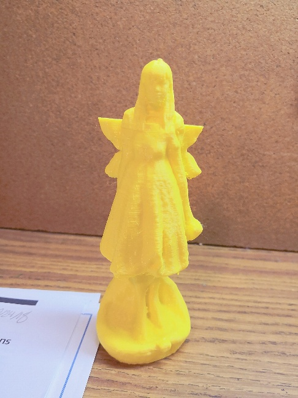

These 3D printers in WIC are the MakerBot Replicator 5th Gen printers which uses a technique called Fused Deposition Modeling(FDM) to print models. Makerbot Replicators basically print models out by heating plastic filamment to certain temperature which can liquify the plastic. These liquified plastic would then become cool and solidify into the shape as it is extruded. Makerbot printers are different from another printer:Formlabs printer---this printer uses ultraviolet radiation to harden resin in order to print different models. Formlabs printer can print things that are more durable compared to the models that printed by Makerbot. However, resin used in Formlabs is far more expensive than the plastic filamment and the price of resin limits our ability to use it.
In class today, we need to scan our head and use Meshmixer to combine our heads on somethings or someones. I download a file from a website called "Thinkiverse". You can search this website and find almost every files you want for your 3D models. My file is a small fairy, because I decided to put my head on a fairy! My classmate 3D scanned my head and I imported my head into Meshmixer. Then I imported the file of my fairy into Meshmixer too. In order to put my head on fairy, I had to cut fairy's head off( so brutal). Then I changed the size of my 3D scanned head and fairy's body to the proper size. Last but not least, I combined these two parts together and printed it out!

In the class today I need to creat a model that needed to be made addictively. I built a model of a traditional chinese tower which is the mimic of a tower in Xi'an China called DaYan tower. This is one of the most famous tower in the Buddhist Temple. It did take me a lot of time to build this model because I need to draw a complex geometic shape then revovled the whole thing. I actually asked for help from my friend to teachm me how to build the top part of my tower. Although my tower doesn't looke exactly the same as DaYan tower, but I do like it and I think it ended up to be really well-printed tower